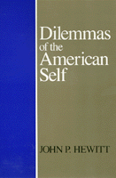

<body bgcolor="#FFFFFF" text="#000000" link="#0000FF" vlink="#CC0000" alink="#CC0000"><center><hr width="350" size="1" align="center" noshade>A theory about what it means to be an individual within contemporary American society<hr width="350" size="1" align="center" noshade><p><a href="https://cdcshoppingcart.uchicago.edu/Cart/ChicagoBook.aspx?ISBN=9780877226567&&PRESS=temple" target="_top">Buy this book!</a> | <a href="https://cdcshoppingcart.uchicago.edu/Cart/Cart.aspx?PRESS=temple" target="_top">View Cart</a> | <a href="https://cdcshoppingcart.uchicago.edu/Cart/Cart.aspx?PRESS=temple" target="_top">Check Out</a></p><p></p></center><!--none//--><h1>Dilemmas of the American Self</h1>
<h3>John P. Hewitt</h3>
<P>cloth 0-87722-656-3 $34.95, Dec 89, <FONT COLOR=#990033>Out of Print</FONT>
<br>paper 0-87722-837-X $24.95, Mar 91, <FONT COLOR=#990033>Out of Stock Unavailable</FONT>
<br>Electronic Book 1-43990-357-3 $36.95 <FONT COLOR=#990033>Out of Print</FONT>
<BR> 304 pp
</P><h3 align="center"><P><font color="#996633">Charles Horton Cooley Award of the Society for the Study of Symbolic Interaction,
1990</font></P>
</H3>
<BLOCKQUOTE><I>"According to Hewitt, the essence of modernity is tension between community and society. This ambitious, sophisticated, and well-written book is a tonic for those who weary of simplistic sermons on the condition of American culture."</I>
<br>&#151<b><I>Choice</I></b><I></I></BLOCKQUOTE>
<p>This book explores stability and change in American social character and identity, and offers a theory about what it means to be an individual within contemporary American society. Skeptical of the widely-accepted thesis that the self, at least in America, has drastically changed, John P. Hewitt assumes that there is more historical continuity and that the culture is filled with internal contradictions. Combining the insights of social psychology, with those of writers who have offered critiques of the larger society and its influences on the individual, he revises our understanding of the person in American society.
<p>Hewitt examines the theories of such authors as David Riesman, Allen Wheelis, Christopher Lasch, Erving Goffman, Carl Rogers, Ralph Turner, and others. He treats their emphasis on the decline of transformation of the self not as social theory to be tested, but as cultural text that reveals some of the main historical and contemporary features and fault lines of American culture.
<p>"American culture is best characterized not as relentlessly individualistic or as lacking in the capacity to conceive of or discuss community, but as torn between individualism and communitarianism, thus creating serious felt difficulties of social adjustment and personal meaning." Proposing a symbolic interactionist theory of culture, Hewitt emphasizes inherent polarities of meaning and dilemmas of conduct that shape the experience of self: conformity versus rebellion, staying versus leaving, and dependence versus independence. He constructs a theory of identity that views personal identity and social identity as contending means for securing the continuity and integration of the self, and applies the theory to American society by depicting autonomous, exclusivist, and pragmatic strategies of self-construction.
<BR>&nbsp;<h2>Reviews</h2>
<p><I>"This theoretically sophisticated work is very ably organized and marked by superior scholarly and expository craftsmanship. It will be hailed, I believe, as an important contribution to symbolic interactionism and the sociology and social psychology of everyday life. Hewitt's treatment of self, identity, conformity, differentiation, community, and modernity is a fine example of creative scholarship."</I>
<br>&#151<b>Charles H. Page</b>, University of Massachusetts (Emeritus)
<p>"Hewitt has set himself the ambitious task of providing a symbolic interactionist analysis of culture, society, and self, and has succeeded admirably in the effort. I found his rich description of cultural types to be especially insightful. It is no exaggeration to characterize this book as a landmark work in the development of symbolic interactions."</I>
<br>&#151<b>Morris Rosenberg</b>, University of Maryland-College Park
<BR>&nbsp;<h2>Contents</h2><P>
<p>Preface
<br>1. The Ubiquity of the Self
<br>2. Social Theory as Cultural Text
<br>3. A View of American Culture
<br>4. Modernity, Society, and Community
<br>5. A Theory of Identity
<br>6. Strategies of Self-Construction
<br>7. In the Last Analysis
<br>Notes
<br>Bibliography
<br>Index
</P><BR>&nbsp;<H2>About the Author(s)</H2>
<P><b>John P. Hewitt</b> is Professor of Sociology at the University of Massachusetts at Amherst and the author of several books, including <I>Self and Society: A Symbolic Interactionist Social Psychology</I>.</P>
<BR><H2>Subject Categories</H2>
<p><A HREF="/tempress/american.html" TARGET="_top">American Studies</a>
<BR><A HREF="/tempress/sociology.html" TARGET="_top">Sociology</a>
</p>
<p align="center"><a href="https://cdcshoppingcart.uchicago.edu/Cart/ChicagoBook.aspx?ISBN=9780877226567&&PRESS=temple" target="_top">Buy this book!</a> | <a href="https://cdcshoppingcart.uchicago.edu/Cart/Cart.aspx?PRESS=temple" target="_top">View Cart</a> | <a href="https://cdcshoppingcart.uchicago.edu/Cart/Cart.aspx?PRESS=temple" target="_top">Check Out</a></p><p><font face="Arial" size="1"><a href="copyright.html" onMouseOver="window.status='Web Copyright Policy';return true;" onMouseOut="window.status=''" title="Web Copyright Policy">&copy;</a> 2015 <a href="http://www.temple.edu" target="new" onMouseOver="window.status='Link to Temple University home page';return true;" onMouseOut="window.status=''" title="Link to Temple University home page">Temple University</a>. All Rights Reserved. http://www.temple.edu/tempress/titles/677_reg.html</font></p>